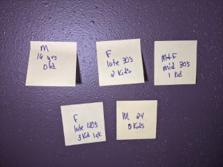

Analysis
Affinity Map
An affinity map is used to organize ideas or insights. I used it to It allow brainstorming to be sorted into groups, based on their natural relationships, for review and analysis.
Gender/Age/Children
Website Usage(Motivations)
Website Awareness
Would Use Save if Available
(c=car s=store)
Quotes
Survey
I created an online survey that asked questions regarding the current Dominos website. It asked 200 individuals, focusing on individuals of the targeted demographics. The survey and results as follows:
Survey Results
Based on the online survey, 77% of individuals have used the website to order from Dominos, with 71% using store pick up. When entering store information, 30% found entering the information each time, helpful or very helpful. Sixty-one percent used car side delivery, only 39% found entering the car information each time helpful or very helpful. When asked if they would use a saved feature, 96% would used some type of saved feature.

During this usability test, comments made were: